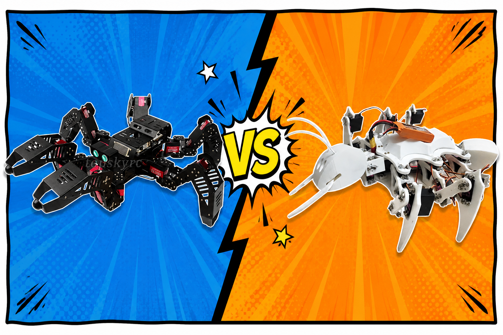
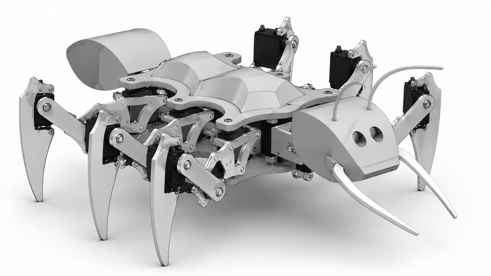

ABiZ
Engineered a high-performance business intelligence platform. Built a robust backend using Node.js and Supabase for real-time data synchronization, and designed dynamic visualization pipelines in React for analytics at scale.
Repository ↗They all solve the exact same problem:
Organizing complexity into reliable systems.
From an expensive problem to an accessible hardware solution.

Commercial hexapods ($5,000-$50k) gatekeep research. We engineered one for education.

Designed custom 21-DOF structural integrity models capable of carrying computer vision payloads.
Validated mathematical models in MATLAB to generate stable tripod gaits across unstructured terrain.
Execution in GPS-denied environments utilizing OpenCV for spatial awareness.
Engineered a high-performance business intelligence platform. Built a robust backend using Node.js and Supabase for real-time data synchronization, and designed dynamic visualization pipelines in React for analytics at scale.
Repository ↗Black-box deep learning is rejected by city planners. I built a hybrid architecture: LSTM for flow, LightGBM for tabular events, and Fuzzy Logic for human-readable rules (e.g., "IF congestion is HIGH, THEN extend green light").
Repository ↗Trained a generic deep learning model on raw HTTP payload signatures.
18% accuracy in real-world drift scenarios. Attackers obfuscated payloads effortlessly.
Abandoned payload inspection. Shifted to monitoring OS-level behavioral changes (CPU spikes, memory allocation) on the host.
100% Recall on SRBH-20. Engineered to run inference in <12ms on a Raspberry Pi 5.
Repository ↗Q-learning task scheduler for 5G mobile edge computing. Balances deadline satisfaction against energy consumption on heterogeneous edge servers.
Repository ↗SVD-based steganography embedding sensitive patient metadata directly inside genomic sequence data.
Repository ↗Unsupervised low-dose CT reconstruction combining ADMM optimization with a Multi-Code Deep Image Prior ensemble.
Repository ↗AI assistant for metro control-center operators supporting live scheduling decisions.
Repository ↗Predicts alloy phase structure from composition and processing parameters for mechanical design.
Repository ↗A chronological log of curiosity and engineering experiments.
Deploying models onto Raspberry Pi 5. Pruning neural networks to achieve sub-15ms latency without dropping recall.
Structuring engineering knowledge into a graph database. Mapping dependencies between research evidence and system claims.
Evaluating if reinforcement learning can actually outperform heuristic schedulers in highly constrained edge environments.
Discovering that city planners hate black boxes. Writing human-readable logic rules to override neural network outputs.
First attempts at mathematically modeling a 21-DOF hexapod. Lots of math errors and robot collisions.